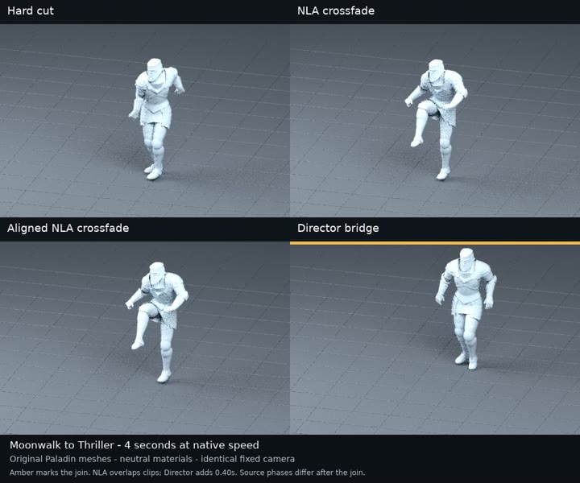

3D and creative tooling
Blender Asset Director
Gives a coding agent a small Blender production team: reuse assets, adapt motion, plan shots and review the result.
- When
- Sep 2026
- Status
- v0.5.0 released; v0.6 in development
- Source
- Public source
- Stack
Problem and idea
Agents that build 3D scenes tend to generate everything from scratch, even when suitable assets already exist. And moving an animation from one character rig to another often breaks the footwork and timing.
The idea: index what the scene and library already have, plan the transfer and have it reviewed, then adapt the motion with explicit checks, and keep technical tests separate from a person’s judgement of the performance.
How it works
- Prompt and sceneStart from what already exists
- IndexAssets and motion clips
- PlanReviewed transfer plan
- AdaptRetarget with grounding and timing checks
- ReviewEvidence for a person to judge
Demo

What I built
- A Python package and command-line tool with no third-party dependencies, plus an installer.
- One agent skill that loads seven roles as needed: director, scout, performance, camera, lighting, editing and continuity.
- Motion retargeting with reference-frame conversion, optional foot grounding, and fixes for import timing and clip endpoints.
- Full-clip sequencing with a reviewed bridge between clips, and a public technical lab on GitHub Pages.
Stack
Quality evidence
- 523 test functions, including Blender component tests and end-to-end job tests in CI.
- Releases are published only after the complete CI suite passes, and the public installer is checked after each release.
Current limits
- A technically correct transfer is not proof of natural movement; unsuitable source clips still look wrong.
- Video-to-motion capture and live streaming are not implemented.
- The installer still installs v0.5.0; the development branch is ahead of it.